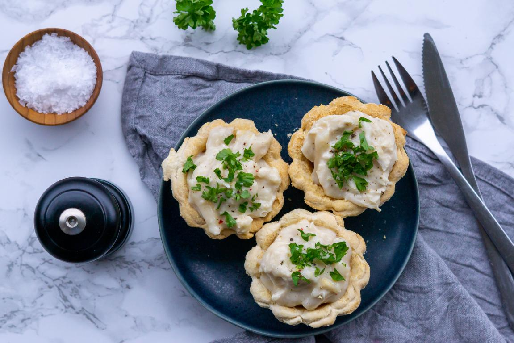

Home
Tarteletter (Chicken and Asparagus Tartlets)

Description
Tarteletter are a classic Danish comfort food, beloved for their delicate crispness and creamy, savory fillings.
These small, golden pastry shells—often made from puff pastry or a flaky shortcrust—are traditionally filled with a rich chicken and asparagus ragout, thickened with a buttery white sauce.
The combination of crisp shell and warm, creamy filling strikes a perfect balance, making tarteletter a popular choice for festive occasions like Easter lunches, Sunday dinners, or nostalgic family gatherings.
While the most iconic version uses chicken and white asparagus, other fillings like shrimp, mushrooms, or ham also make delicious appearances, depending on the region or the cook’s creativity.
Tarteletter hold a special place in Danish culinary tradition, representing a blend of elegance and homestyle coziness.
Though they look refined, they’re deeply tied to feelings of comfort and tradition, often sparking childhood memories for many Danes.
They’re served warm, usually in pairs, and sometimes garnished with fresh parsley or a sprinkle of nutmeg.
Whether prepared for a holiday meal or a casual dinner, tarteletter invite you to slow down and enjoy something humble yet thoughtfully made—a flaky, creamy bite of Denmark’s rich food heritage.
Ingredients
For the shells:
- 2 cups all-purpose flour
- 1/2 tsp salt
- 2 sticks of unsalted butter, cold
- 1 egg
For the filling:
- 1 lb chicken breast
- Salt and pepper to taste
- 1/2 lb of asparagus
- 1.5 oz butter
- 5 tbsp all-purpose flour
- 1 cup milk
- 1 cup chicken stock
Instructions
- Start by making the tartlet shells. Combine the flour and salt in a large bowl. Add the butter and toss to coat. Mix by hand or food processor until the mixture has a crumbly, sand-like consistency.
- Add the egg and mix by hand or food processor until the dough holds together when pressed between your fingers.
- Form the dough into a ball, wrap in plastic wrap, and allow it to sit in the refrigerator for about 30 minutes. In the meantime, heat your oven to 390 degrees F.
- Oil a tart molds and form the dough into portions just big enough to cover the molds. Roll out the dough until about 1/4 inch thick and press to form the dough to the molds, trimming off any excess.
- Bake the shells for about 20 minutes, until golden brown.
- Season the chicken breasts with salt and pepper. Heat oil in a pan over medium heat and cook the chicken until cooked through. Place on a cutting board to cool.
- While the chicken cools, chop the asparagus into small pieces. Cook the asparagus in the same pan used for the chicken until tender. Season with salt and pepper.
- Cut the chicken into bite-sized pieces.
- In a pot, melt the butter over medium heat. Gradually add the flour while mixing vigorously until well-combined.
- Slowly add the milk, continuing to whisk to prevent clumps. Then slowly add the chicken stock in the same fashion, whisking until combined. Allow to simmer for few minutes until it thickens a bit.
- Add the chicken and asparagus to the sauce. Mix until relatively uniform. Spoon the filling into the shells and serve.